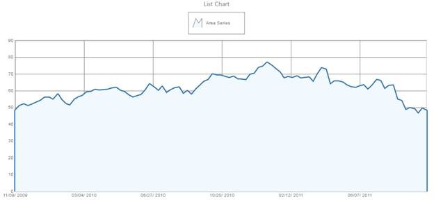

The steps to bind chart to datasource through the ChartModel are as follows:
1. In Controller, create an instance of MVCChartModel.
2. Create an instance of ChartSeries.
3. In BindTo mapper of the series, set the DataSource as IEnumerable and XName property to any field name that is to be rendered as X-Axis in Chart and YNames as array of field names that are to be rendered as Y-Axis in Chart.
4. Set the ChartSeries, ChartArea, and ChartModel properties.
|
[C#] public ActionResult SimpleChart(){ ExcelEngine engine = newExcelEngine(); IApplication app = engine.Excel; IWorkbook workBook = app.Workbooks.Open(HttpContext.Request.PhysicalApplicationPath + @"\App_data\ChartData.xlsx"); IWorksheet sheet = workBook.Worksheets[0]; DataTable dt = sheet.ExportDataTable(sheet.UsedRange, ExcelExportDataTableOptions.DetectColumnTypes); List<Chartdata> data = newList<Chartdata>();
for (int i = 1; i < 100; i++) data.Add(newChartdata(Convert.ToDateTime(dt.Rows[i][0]).ToOADate(), Convert.ToDouble(dt.Rows[i][1])));
ChartModel model = newChartModel();
#region Chart Model Properties
model.Text = "List Chart"; model.Font = newChartFont("Segoe UI", "14px", ChartFontStyle.Normal); model.Size = newSize(1000, 500);
#endregion
#region Series
Series areaSeries = newSeries("Area Series"); Random ran = newRandom();
areaSeries.Type = SeriesType.Area; areaSeries.BindTo = newChartDataBind() { DataSource = data, XName = "Date", YNames = newstring[] { "YValue" } };
model.Series.Add(areaSeries);
areaSeries.Style.Border.Width = 5; areaSeries.Style.Border.Color = Color.FromArgb(51, 119, 181); areaSeries.Style.Interior = newGradientInfo(newColorInfo(Color.FromArgb(241, 248, 254))); #endregion
#region Axes Customization model.Axes["PrimaryX"].ValueType = ChartAxisValueType.DateTime; model.Axes["PrimaryX"].RangeType = RangeType.Set; model.Axes["PrimaryX"].Range = newMinMaxInfo() { Start = 40126, End = 40812, Interval = 115 }; model.Axes["PrimaryX"].DateFormat = "mm/dd/ yyyy"; model.Axes["PrimaryY"].RangeType = RangeType.Set; model.Axes["PrimaryY"].Range = newMinMaxInfo() { Start = 0, End = 90, Interval = 10 }; #endregion
ViewData["ChartModel"] = model;
return View(); } public class Chartdata { public Chartdata(double date, double yValue) { this.Date = date; this.YValue = yValue; } publicdouble Date { get; set; } publicdouble YValue { get; set; }
}
|
5. In the View page, invoke the ChartBuilder by using the control ID as the first argument, and convert the ViewData to MVCChartModel and set it as the second argument.
|
[ASPX]
<% = Html.Syncfusion.Chart(" SimpleChart " , (ChartModel)ViewData["ChartModel"])%>
|
|
[Razor]
@ (Html.Syncfusion.Chart("SimpleChart", (ChartModel)ViewData["ChartModel"]))
|
6. Build and run the code, to get the following output:

Figure 44: Chart with data binding